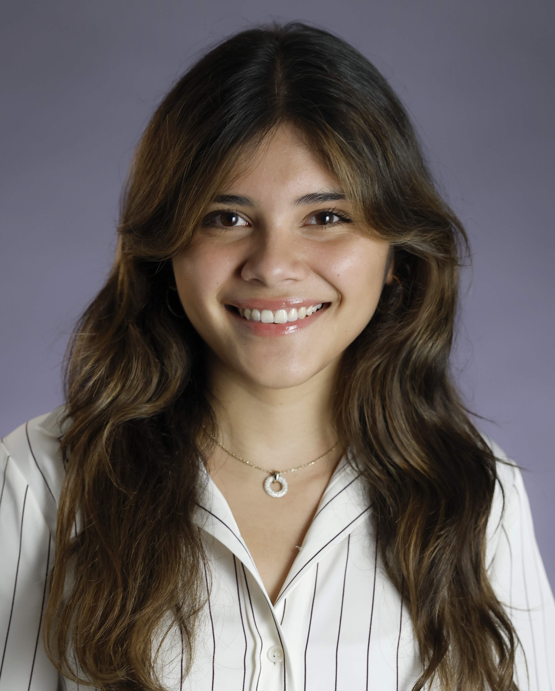

Current Work
I'm a reporting intern at Block Club Chicago, where I cover daily neighborhood news spanning local business developments, public transportation, public safety and health, arts and culture, and events across Chicago.
Read my work →
I'm a Chicago-based reporter covering local communities across the city.
I find stories by staying curious about the people and places I cover and attuned to the needs of local communities that lack robust news coverage.
I'm a reporting intern at Block Club Chicago, where I cover daily neighborhood news spanning local business developments, public transportation, public safety and health, arts and culture, and events across Chicago.
Read my work →I'll complete my coursework at Northwestern University in March 2027 with a Bachelor of Science in Journalism and Asian American Studies and a minor in Film and Media Studies.
My senior thesis will draw on my own experience as a child of migrants to explore Filipino-Mexican marriages in California's agricultural communities during the 1920s and 1930s. I'll examine how Mexican women helped Filipino laborers establish permanent roots in California and how their shared histories of Spanish colonization influenced the family traditions passed down to their children.
My passion for journalism comes from the people who share their lives with strangers like me, trusting us to carry their stories with honesty and meaning through our writing. I approach my reporting with a solutions-oriented lens and a vested interest in housing and affordability issues affecting local communities.
As I grow as a reporter, I hope to transition into investigative reporting that probes systemic issues, with a focus on economic disparities and barriers to accessing basic necessities in underserved communities.